26 Reaction kinetics
Rate equations, orders of reaction, rate constants and catalysis
26 Reaction kinetics
本章按 CIE 2025–2027 syllabus 的章节编号组织为 26.1 Simple rate equations, orders of reaction and rate constants 与 26.2 Homogeneous and heterogeneous catalysts (AL)。题目来源仍保留旧专题题包的 5.6 Reaction Kinetics (A Level Only) 作为 source label。
Learning objectives
学完本章后，你应该能够：
- define rate of reaction, rate equation, order of reaction, overall order, rate constant, half-life, rate-determining step and intermediate;
- construct and use $ ext{rate}=k[A]m[B]n$, where \(m\) and \(n\) are found experimentally;
- use initial rates, concentration-time graphs, rate-concentration graphs and half-lives to determine reaction order;
- calculate an initial rate, rate constant and the correct units for \(k\);
- use \(k=0.693/t_{1/2}\) for a first-order reaction;
- propose mechanisms consistent with an overall equation and rate equation, and identify the rate-determining step, intermediates and catalysts;
- explain qualitatively how temperature changes affect \(k\) and rate, and interpret an Arrhenius plot;
- distinguish homogeneous and heterogeneous catalysts;
- explain adsorption, bond weakening and desorption in heterogeneous catalysis;
- describe iron in the Haber process, platinum/palladium/rhodium in catalytic converters, and the Fe\(^{2+}\)/Fe\(^{3+}\) homogeneous catalytic cycle.
26.1 Simple rate equations, orders of reaction and rate constants
Rate of reaction and rate equations
The rate of reaction is the change in concentration of a reactant or product per unit time. For a reactant, the concentration decreases, so the rate may be written using the magnitude of the negative gradient:
\[\text{rate}=-\frac{\Delta[\text{reactant}]}{\Delta t}\]
For a product:
\[\text{rate}=\frac{\Delta[\text{product}]}{\Delta t}\]
The usual units are \(\mathrm{mol\,dm^{-3}\,s^{-1}}\).
The rate equation is determined experimentally and cannot be deduced from the stoichiometric equation:
\[\text{rate}=k[A]^m[B]^n\]
Here \(k\) is the rate constant, and \(m\) and \(n\) are the orders with respect to \(A\) and \(B\). A reactant may be zero-, first- or second-order in the CIE syllabus. A zero-order reactant is omitted from the written rate equation because \([A]^0=1\).

Orders of reaction and overall order
The order with respect to a reactant is the power to which its concentration is raised in the rate equation. The overall order is the sum of all individual orders.
For example:
\[\text{rate}=k[\ce{NO2}]^2[\ce{H2}]\]
- second-order with respect to \(\ce{NO2}\);
- first-order with respect to \(\ce{H2}\);
- third-order overall.
The stoichiometric coefficients in an overall equation do not automatically give the reaction orders. They only show the mole ratio in the overall chemical change.
Rate-concentration graphs are useful when the concentration of only one reactant is changed:
| Order | Relationship | Shape of rate-concentration graph |
|---|---|---|
| zero | rate is independent of concentration | horizontal line |
| first | rate is directly proportional to concentration | straight line through the origin |
| second | rate increases with the square of concentration | upward-curving line |
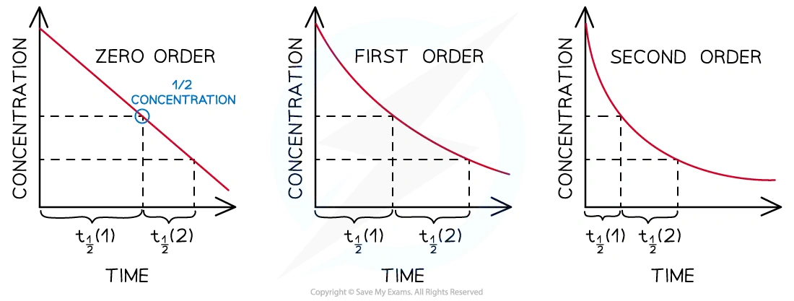
Worked example · Note calculation
Calculating an initial rate
The reaction between bromomethane and hydroxide ions is:
\[\ce{CH3Br + OH- -> CH3OH + Br-}\]
The rate equation is \(\text{rate}=k[\ce{CH3Br}][\ce{OH-}]\). The rate constant is \(1.75\times10^2\ \mathrm{dm^3\,mol^{-1}\,s^{-1}}\). Calculate the initial rate when \([\ce{CH3Br}]=0.0200\ \mathrm{mol\,dm^{-3}}\) and \([\ce{OH-}]=0.0100\ \mathrm{mol\,dm^{-3}}\).
Substitute the values into the rate equation:
\[\text{initial rate}=k[\ce{CH3Br}][\ce{OH-}]\]
\[\text{initial rate}=(1.75\times10^2)(0.0200)(0.0100)\]
\[\text{initial rate}=3.50\times10^{-2}\ \mathrm{mol\,dm^{-3}\,s^{-1}}\]
Final answer: \(3.50\times10^{-2}\ \mathrm{mol\,dm^{-3}\,s^{-1}}\).
Determining order from experimental data
For the initial rates method, compare two experiments in which the concentration of one reactant changes while the other concentrations stay constant.
If doubling \([A]\):
- leaves the rate unchanged, the reaction is zero-order in \(A\);
- doubles the rate, the reaction is first-order in \(A\);
- makes the rate four times larger, the reaction is second-order in \(A\).
The same reasoning can be applied to concentration-time graphs and rate-concentration graphs. A concentration-time graph is interpreted through its shape and gradient. For zero order it is a straight line with a constant negative gradient; for first order it is a decreasing curve with a constant half-life; for second order it is a steeper decreasing curve whose successive half-lives increase.
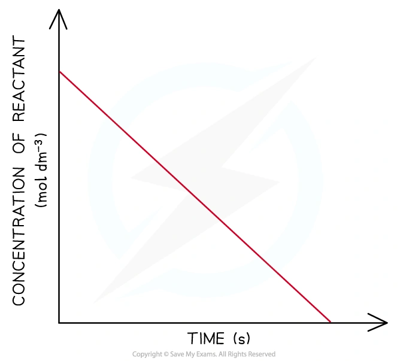
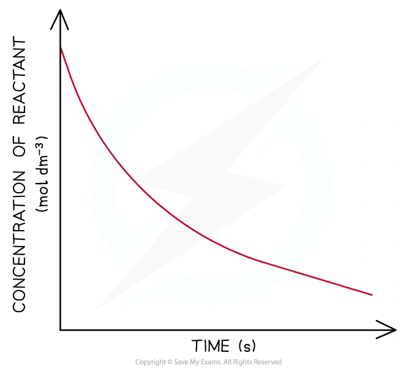
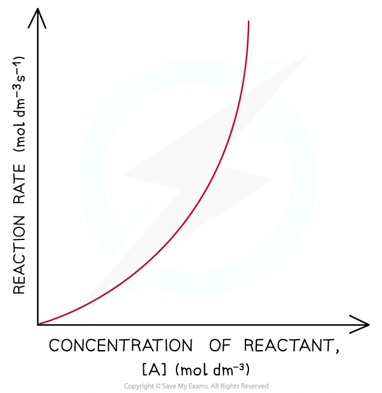
Worked example · Note graph interpretation
Determining order from successive half-lives
The change in concentration of a reactant over time is recorded in the following table. Draw a graph of concentration against time. Determine the first and second half-lives and hence determine the order of the reaction.
| Time / s | 0 | 200 | 400 | 600 | 800 | 1000 | 1200 | 1400 | 1600 |
|---|---|---|---|---|---|---|---|---|---|
| \([\text{reactant}]\times10^4\) / mol dm\(^{-3}\) | 5.8 | 4.4 | 3.2 | 2.5 | 1.7 | 1.2 | 0.8 | 0.5 | 0.3 |
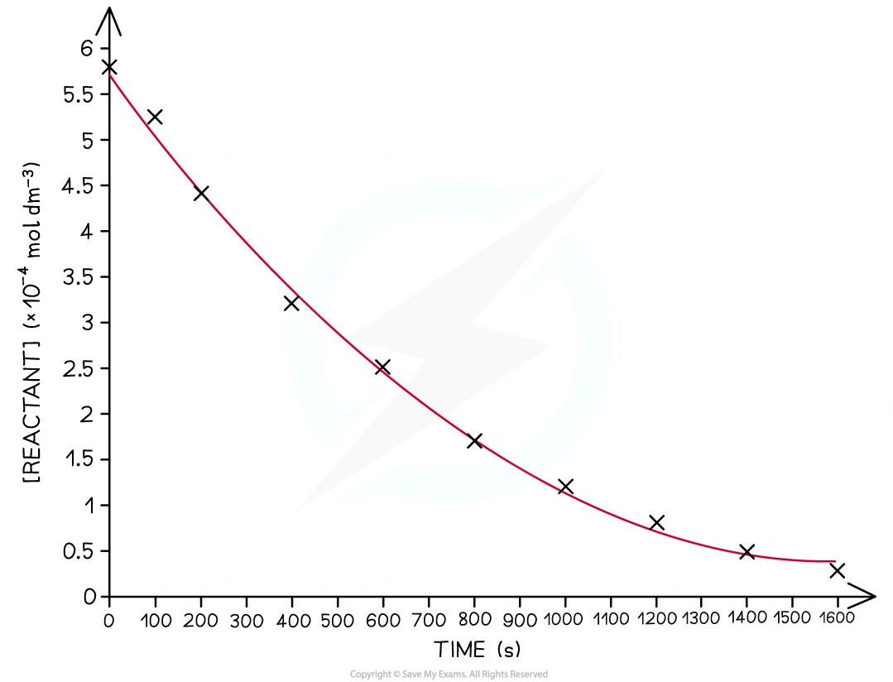
The first half-life is the time for the concentration to decrease from \(5.80\) to \(2.90\times10^{-4}\ \mathrm{mol\,dm^{-3}}\).
From the graph, this takes approximately \(470\ \mathrm{s}\).
The second half-life is the time for the concentration to decrease from \(2.90\) to \(1.45\times10^{-4}\ \mathrm{mol\,dm^{-3}}\).
From the graph, this takes approximately:
\[920-470=450\ \mathrm{s}\]
The successive half-lives are reasonably constant, both being about \(450\)–\(470\ \mathrm{s}\).
Final answer: the reaction is first order, because its half-life remains approximately constant.
Half-life and first-order reactions
The half-life, \(t_{1/2}\), is the time taken for the concentration of a limiting reactant to fall to half its initial value.
| Order | Successive half-lives |
|---|---|
| zero | decrease as the reaction proceeds |
| first | remain constant |
| second | increase as the reaction proceeds |
For a first-order reaction the half-life is independent of the initial concentration:
\[k=\frac{0.693}{t_{1/2}}\]
The half-life must be expressed in seconds if \(k\) is required in \(\mathrm{s^{-1}}\).
For example, the rearrangement of ethanenitrile is first-order:
\[\ce{CH3CN(g) -> CH3NC(g)}\]
If \(t_{1/2}\) is about \(10.0\) minutes, it is about the same for each successive halving.
Worked example · First-order half-life
Calculating a rate constant from half-life
The rearrangement of the methyl group in ethanenitrile, \(\ce{CH3CN(g) -> CH3NC(g)}\), has a half-life of \(10.0\) minutes. Calculate the rate constant.
Convert the half-life to seconds:
\[t_{1/2}=10.0\times60=600\ \mathrm{s}\]
Use the first-order expression:
\[k=\frac{0.693}{t_{1/2}}=\frac{0.693}{600}\]
\[k=1.16\times10^{-3}\ \mathrm{s^{-1}}\]
Final answer: \(k=1.16\times10^{-3}\ \mathrm{s^{-1}}\).
Units of the rate constant
The units of \(k\) depend on the overall order of the reaction. They are obtained by rearranging the rate equation and substituting the units of rate and concentration. For a second-order rate equation such as \(\text{rate}=k[A][B]\):
\[ k=\frac{\text{rate}}{[A][B]} \]
Therefore:
\[ k=\frac{\mathrm{mol\,dm^{-3}\,s^{-1}}}{(\mathrm{mol\,dm^{-3}})(\mathrm{mol\,dm^{-3}})} =\mathrm{dm^3\,mol^{-1}\,s^{-1}} \]
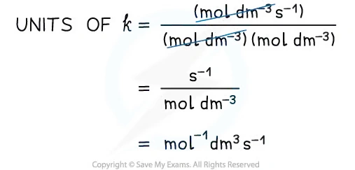
Worked example · Rate constant from initial rate
Calculating \(k\) from an initial rate
Calcium carbonate reacts with chloride ions and hydrogen ions according to:
\[\ce{CaCO3(s) + 2Cl-(aq) + 2H+(aq) -> CaCl2(aq) + CO2(g) + H2O(l)}\]
The experimentally determined rate equation is \(\text{rate}=k[\ce{CaCO3}][\ce{Cl-}]\). In experiment 1, \([\ce{CaCO3}]=0.0250\ \mathrm{mol\,dm^{-3}}\), \([\ce{Cl-}]=0.0125\ \mathrm{mol\,dm^{-3}}\) and the initial rate is \(4.38\times10^{-5}\ \mathrm{mol\,dm^{-3}\,s^{-1}}\). Calculate \(k\) and its units.
Rearrange the rate equation:
\[k=\frac{\text{rate}}{[\ce{CaCO3}][\ce{Cl-}]}\]
Substitute the values:
\[k=\frac{4.38\times10^{-5}}{(0.0250)(0.0125)}\]
\[k=1.40\times10^{-1}\ \mathrm{dm^3\,mol^{-1}\,s^{-1}}\]
For the units:
\[k=\frac{\mathrm{mol\,dm^{-3}\,s^{-1}}}{(\mathrm{mol\,dm^{-3}})(\mathrm{mol\,dm^{-3}})}\]
\[k=\mathrm{dm^3\,mol^{-1}\,s^{-1}}\]
Final answer: \(k=1.40\times10^{-1}\ \mathrm{dm^3\,mol^{-1}\,s^{-1}}\).
Rate-determining steps, mechanisms and intermediates
A reaction mechanism describes the individual steps by which bonds are broken and formed. The rate-determining step is the slowest step. It controls the rate and contains the reactants whose concentrations appear with non-zero orders in the rate equation.
An intermediate is formed in one step and used up in a later step, so it does not appear in the overall equation. A catalyst is also involved in the mechanism but is regenerated and therefore does not appear in the overall equation. In a proposed mechanism:
- adding the steps must give the overall equation;
- species that cancel between steps are intermediates or catalysts;
- the reactants in the slow step should agree with the experimentally determined rate equation.
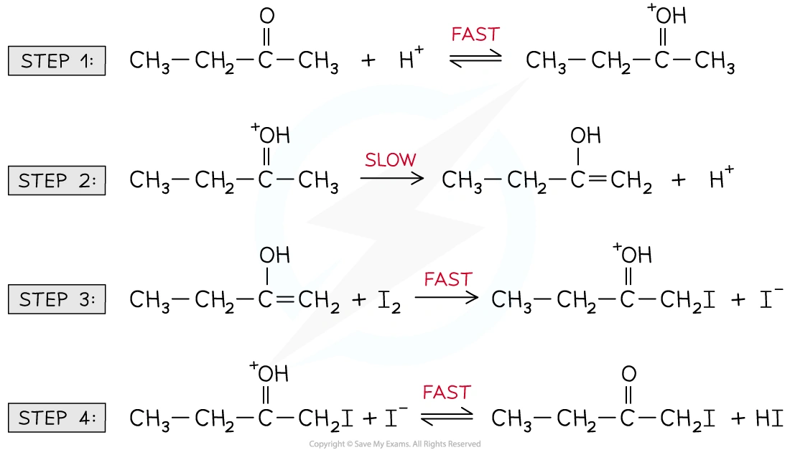
Worked example · Predicting a mechanism
A mechanism consistent with a rate equation
Nitrogen dioxide and carbon monoxide react according to:
\[\ce{NO2(g) + CO(g) -> NO(g) + CO2(g)}\]
The rate equation is \(\text{rate}=k[\ce{NO2}]^2\). Suggest a possible two-step mechanism.
Because the reaction is second-order with respect to \(\ce{NO2}\) and zero-order with respect to \(\ce{CO}\), a suitable slow step contains two \(\ce{NO2}\) molecules and does not contain \(\ce{CO}\):
Step 1, slow:
\[\ce{2NO2(g) -> NO(g) + NO3(g)}\]
Step 2, fast:
\[\ce{NO3(g) + CO(g) -> NO2(g) + CO2(g)}\]
Adding the steps and cancelling \(\ce{NO3}\) and one \(\ce{NO2}\) gives:
\[\ce{NO2(g) + CO(g) -> NO(g) + CO2(g)}\]
Final answer: the slow first step is consistent with \(\text{rate}=k[\ce{NO2}]^2\); \(\ce{NO3}\) is an intermediate.
Worked example · Deducing a rate equation
Predicting reaction order from a mechanism
Nitrogen monoxide reacts with hydrogen:
\[\ce{2NO(g) + 2H2(g) -> N2(g) + 2H2O(l)}\]
The mechanism is:
\[\ce{NO + NO -> N2O2}\quad\text{fast}\]
\[\ce{N2O2 + H2 -> H2O + N2O}\quad\text{slow}\]
\[\ce{N2O + H2 -> N2 + H2O}\quad\text{fast}\]
Deduce the rate equation and overall order.
The second step is the rate-determining step. It contains one \(\ce{N2O2}\) intermediate and one \(\ce{H2}\) molecule.
The intermediate \(\ce{N2O2}\) is formed from two \(\ce{NO}\) molecules in the fast first step. Therefore the experimentally relevant rate equation is:
\[\text{rate}=k[\ce{NO}]^2[\ce{H2}]\]
The reaction is second-order with respect to \(\ce{NO}\) and first-order with respect to \(\ce{H2}\).
Final answer: third-order overall.
Worked example · Identifying a rate-determining step
Bromination mechanism
Propane undergoes bromination under alkaline conditions. The experimentally determined rate equation is:
\[\text{rate}=k[\ce{CH3CH2CH3}][\ce{OH-}]\]
The proposed mechanism contains a slow step in which propane reacts with hydroxide, followed by fast reaction of the intermediate with bromine. Identify the rate-determining step.
The rate equation contains propane and hydroxide, but not bromine. Therefore the slow step must contain \(\ce{CH3CH2CH3}\) and \(\ce{OH-}\):
\[\ce{CH3CH2CH3 + OH- -> intermediate + H2O}\quad\text{slow}\]
The intermediate then reacts quickly with \(\ce{Br2}\) to form the bromoalkane product.
Final answer: the first step is the rate-determining step, because it contains both species in the rate equation.
Temperature and the rate constant
At a higher temperature, a greater proportion of molecules have energy equal to or greater than the activation energy. Therefore the rate constant \(k\) increases, and the rate increases when concentrations are unchanged.
The Arrhenius relationship is:
\[\ln k=\ln A-\frac{E_a}{RT}\]
where \(A\) is related to collision frequency and orientation, \(E_a\) is activation energy in \(\mathrm{J\,mol^{-1}}\), \(R=8.31\ \mathrm{J\,K^{-1}\,mol^{-1}}\) and \(T\) is in kelvin.
For a graph of \(\ln k\) against \(1/T\):
\[\text{gradient}=-\frac{E_a}{R}\]
The syllabus mainly requires the qualitative temperature effect, but this relationship explains why the graph is a straight line.
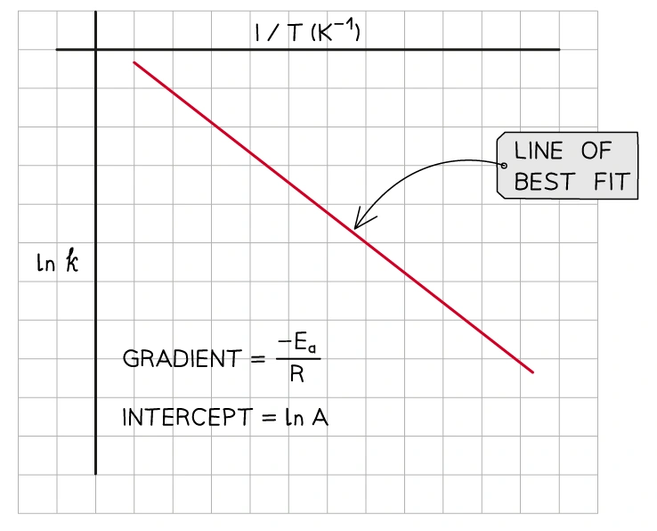
26.2 Homogeneous and heterogeneous catalysts (AL)
What catalysts do
A catalyst increases the rate of reaction by providing an alternative pathway with a lower activation energy. It is not used up overall and does not change the position of equilibrium.
A homogeneous catalyst is in the same phase as the reaction mixture. A heterogeneous catalyst is in a different phase from the reactants and products.
For example, acid-catalysed esterification uses \(\ce{H+ (aq)}\) in an aqueous reaction mixture, so it is homogeneous. In the Haber process, \(\ce{N2(g)}\) and \(\ce{H2(g)}\) react over solid iron, so iron is heterogeneous.
Heterogeneous catalysis: adsorption and desorption
Heterogeneous reactions occur at the surface of a solid catalyst:
- reactant molecules diffuse to the catalyst surface;
- reactants are adsorbed, first by weak physical forces and then by stronger chemisorption;
- bonds within the reactants are weakened and the particles are held close together in suitable orientations;
- new bonds form and products are produced;
- products desorb when the bonds between the products and the catalyst weaken, then diffuse away.

Iron in the Haber process
The Haber process is:
\[\ce{N2(g) + 3H2(g) <=> 2NH3(g)}\]
Solid iron is a heterogeneous catalyst. Nitrogen and hydrogen diffuse to the iron surface and are adsorbed. Bonds in \(\ce{N2}\) and \(\ce{H2}\) are weakened, allowing adsorbed atoms to react in steps. Ammonia then desorbs and diffuses away from the surface.
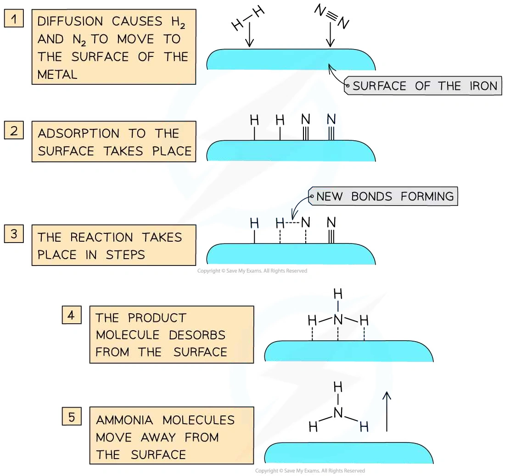
Catalytic converters
The honeycomb in a catalytic converter is coated with platinum, palladium and rhodium. These metals are heterogeneous catalysts because the exhaust gases are gaseous but the catalyst is solid.
The surface adsorbs nitrogen oxides and carbon monoxide. Bonds in the adsorbed molecules weaken; nitrogen atoms form \(\ce{N2}\) and carbon monoxide is oxidised to \(\ce{CO2}\). The products desorb and leave the surface.
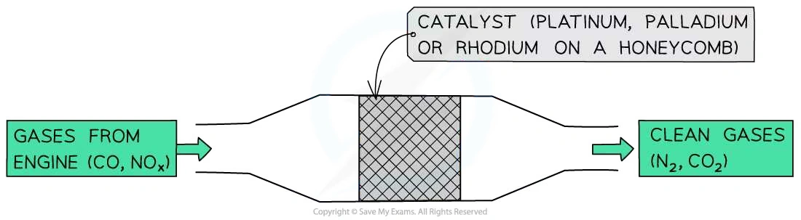
Homogeneous catalysis and regenerated catalysts
Homogeneous catalysis often involves transition-metal ions because they can change oxidation number. The catalyst is used in one step and regenerated in a later step.
For the oxidation of iodide ions by peroxydisulfate ions, \(\ce{Fe^{2+}}\) and \(\ce{Fe^{3+}}\) form a homogeneous catalytic cycle:
\[\ce{2Fe^{3+}(aq) + 2I-(aq) -> 2Fe^{2+}(aq) + I2(aq)}\]
\[\ce{2Fe^{2+}(aq) + S2O8^{2-}(aq) -> 2Fe^{3+}(aq) + 2SO4^{2-}(aq)}\]
The iron ion provides a lower-energy route and is regenerated. The positive iron ions also reduce the electrostatic repulsion between the negative reactant ions.
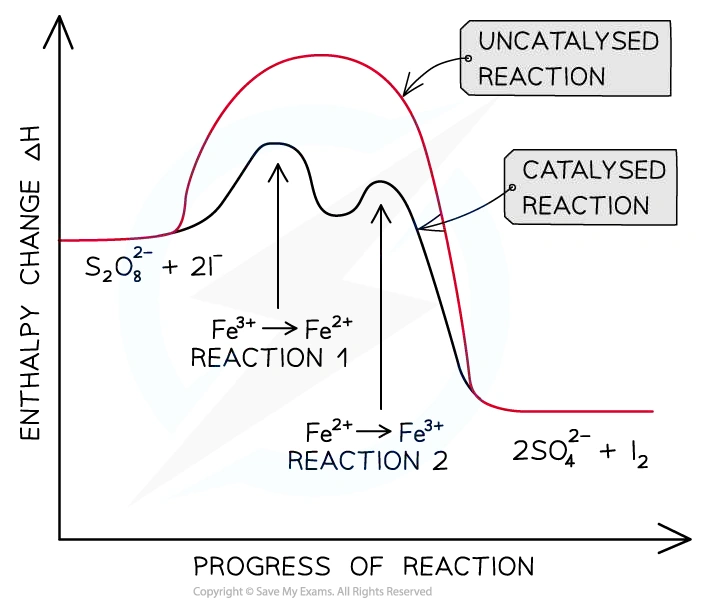
Worked example · Homogeneous catalyst
Nitrogen oxides and acid rain
Nitrogen oxides catalyse the oxidation of sulfur dioxide in the atmosphere. The steps are:
\[\ce{NO2(g) + SO2(g) -> SO3(g) + NO(g)}\]
\[\ce{NO(g) + 1/2O2(g) -> NO2(g)}\]
Explain why nitrogen dioxide is a catalyst and write the overall equation.
Add the two equations:
\[\ce{NO2 + SO2 + NO + 1/2O2 -> SO3 + NO + NO2}\]
Cancel \(\ce{NO2}\) and \(\ce{NO}\) because each appears on both sides:
\[\ce{SO2(g) + 1/2O2(g) -> SO3(g)}\]
\(\ce{NO2}\) is used in the first step and regenerated in the second step, so it is not consumed overall. Both reactants and the catalyst are gases, so this is homogeneous catalysis.
Final answer: \(\ce{NO2}\) is a homogeneous catalyst and the overall equation is \(\ce{SO2 + 1/2O2 -> SO3}\).
Structured Questions
26 Reaction kinetics - Structured Questions
本页保留 5.6 Reaction Kinetics (A Level Only) 题包中的 Structured Questions，按 Easy、Medium、Hard 分组。每题保留完整英文题目、分问、题目所需的图和完整 model-answer steps。
5.6 Reaction Kinetics (A Level Only) - Easy
Example 1 · Rate equation and orders · 5.6 SQ Easy Q1
The rate equation for the reaction between reactants X, Y and Z is shown below.
\[\text{rate}=k[X]^2[Y]\]
(a) State the orders with respect to X, Y and Z. [3 marks]
(b) State the overall order of this reaction. [1 mark]
(c) The rate of reaction is \(3.72\times10^{-5}\ \mathrm{mol\,dm^{-3}\,s^{-1}}\) when the concentrations of X, Y and Z are \(0.01\), \(0.02\) and \(0.04\ \mathrm{mol\,dm^{-3}}\), respectively. Calculate the rate constant, \(k\), including the units. [3 marks]
(d) The experiment was repeated but the initial concentration of X was doubled, all other concentrations remaining the same. State the effect on the rate of reaction and explain your answer. [2 marks]
Show mark scheme / model answer
(a) X is second-order, Y is first-order and Z is zero-order. The power of \([X]\) is 2, the power of \([Y]\) is 1, and Z is absent from the rate equation so its order is 0.
[3](b) Overall order \(=2+1+0=3\), so the reaction is third-order overall.
[1](c)
\[3.72\times10^{-5}=k(0.01)^2(0.02)\]
\[k=\frac{3.72\times10^{-5}}{2.00\times10^{-6}}=18.6\]
\[k=18.6\ \mathrm{dm^6\,mol^{-2}\,s^{-1}}\]
For the units:
\[k=\frac{\mathrm{mol\,dm^{-3}\,s^{-1}}}{(\mathrm{mol\,dm^{-3}})^3}=\mathrm{dm^6\,mol^{-2}\,s^{-1}}\]
[3](d) The rate quadruples. The reaction is second-order with respect to X, so doubling \([X]\) changes the rate by \(2^2=4\). The new rate is \(1.488\times10^{-4}\ \mathrm{mol\,dm^{-3}\,s^{-1}}\).
[2]
Example 2 · Orders from graphs and half-life · 5.6 SQ Easy Q2
Bromide ions and bromate(V) ions react in acidic conditions to form aqueous bromine:
\[\ce{5Br- (aq) + BrO3- (aq) + 6H+ (aq) -> 3Br2(aq) + 3H2O(l)}\]
(a) A rate-concentration graph obtained using different hydrogen ion concentrations is shown below. Use the graph to determine the order with respect to hydrogen ions.
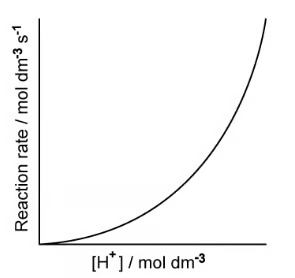
[1 mark]
(b) Experiments using different bromide concentrations showed that the order with respect to bromide ions was first order. On the graph, sketch how the concentration of bromide ions would change during the course of a reaction. [1 mark]
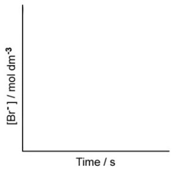
(c) Overall, the reaction is fourth order.
- Deduce the order with respect to bromate(V) ions.
- Using your answer to part (a) and the information in part (b), write the rate equation.
[2 marks]
(d)
- Using your answer to part (c), write an expression for the rate constant.
- Suggest suitable units for the rate constant.
[2 marks]
Show mark scheme / model answer
(a) The graph is curved, so the reaction is second-order with respect to hydrogen ions.
[1](b) Draw a shallow decreasing curve: the concentration falls as time increases, with a constant half-life.
[1](c)(1)
\[1+n+2=4\]
\[n=1\]
Bromate(V) ions are first-order.
[1](c)(2)
\[\text{rate}=k[\ce{Br-}][\ce{BrO3-}][\ce{H+}]^2\]
[1](d)(1)
\[k=\frac{\text{rate}}{[\ce{Br-}][\ce{BrO3-}][\ce{H+}]^2}\]
[1](d)(2)
\[k=\frac{\mathrm{mol\,dm^{-3}\,s^{-1}}}{(\mathrm{mol\,dm^{-3}})^4}=\mathrm{dm^9\,mol^{-3}\,s^{-1}}\]
[1]
Example 3 · Hydrogen peroxide kinetics · 5.6 SQ Easy Q3
Hydrogen peroxide decomposes in the presence of manganese(IV) oxide:
\[\ce{2H2O2(aq) -> 2H2O(l) + O2(g)}\]
The graph in Fig. 3.1 shows how hydrogen peroxide decomposes.

(a) State what is meant by the half-life of a reaction. [1 mark]
(b) Use the graph to show that this reaction is first order with respect to hydrogen peroxide. Deduce the rate equation. [3 marks]
(c) Using the graph in Fig. 3.2, determine:
- the rate of reaction, in \(\mathrm{mol\,dm^{-3}\,s^{-1}}\), at 100 seconds;
- the rate constant for this reaction. State the units.
Your answer must show full working on the graph.
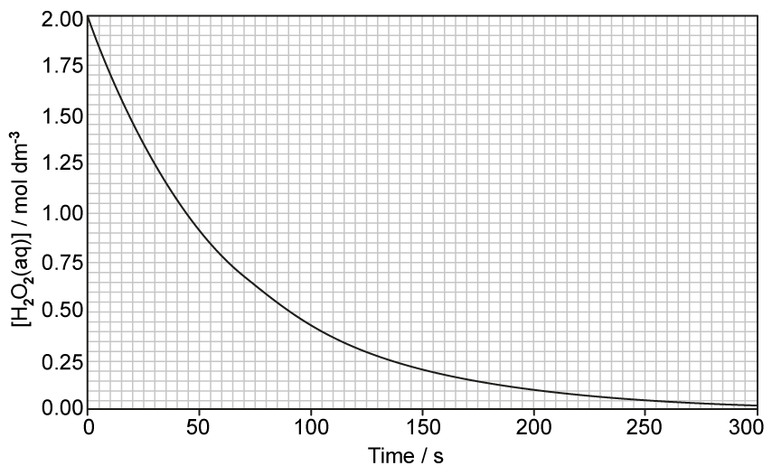
[4 marks]
(d) When the initial concentration of hydrogen peroxide was halved, state the effect, if any, on the half-life. [1 mark]
Show mark scheme / model answer
(a) The half-life is the time taken for half of a reactant to be used up, or for its concentration to fall to half its value.
[1](b) Show two successive half-lives on the graph. Each is approximately \(45\pm2\ \mathrm{s}\), so the half-life is constant. Therefore the reaction is first-order with respect to \(\ce{H2O2}\):
\[\text{rate}=k[\ce{H2O2}]\]
[3](c)(1) Draw a tangent at \(t=100\ \mathrm{s}\). A suitable gradient is:
\[\text{rate}=\frac{0.65\ \mathrm{mol\,dm^{-3}}}{1000\ \mathrm{s}}=6.5\times10^{-4}\ \mathrm{mol\,dm^{-3}\,s^{-1}}\]
Acceptable values are approximately \(6.0\)–\(7.0\times10^{-4}\ \mathrm{mol\,dm^{-3}\,s^{-1}}\).
[2](c)(2) At 100 s, \([\ce{H2O2}]\approx0.425\ \mathrm{mol\,dm^{-3}}\):
\[k=\frac{\text{rate}}{[\ce{H2O2}]}=\frac{6.5\times10^{-4}}{0.425}=1.53\times10^{-2}\ \mathrm{s^{-1}}\]
Alternatively, using \(k=0.693/45=1.54\times10^{-2}\ \mathrm{s^{-1}}\) if the graph’s half-life is read as 45 s. The small difference is due to reading the graph.
[2](d) No effect. The half-life of a first-order reaction is independent of the initial concentration.
[1]
5.6 Reaction Kinetics (A Level Only) - Medium
Example 4 · Initial rates and mechanism · 5.6 SQ Medium Q1
The initial rate of the reaction of chlorine dioxide, \(\ce{ClO2}\), and fluorine, \(\ce{F2}\), is measured at constant temperature:
\[\ce{2ClO2 + F2 -> 2ClO2F}\]
The rate equation is \(\text{rate}=k[\ce{ClO2}][\ce{F2}]\).
| Experiment | \([\ce{ClO2}]\) / mol dm\(^{-3}\) | \([\ce{F2}]\) / mol dm\(^{-3}\) | Initial rate / mol dm\(^{-3}\) s\(^{-1}\) |
|---|---|---|---|
| 1 | 0.010 | 0.060 | \(2.20\times10^{-3}\) |
| 2 | 0.025 | 0.060 | to be calculated |
| 3 | to be calculated | 0.040 | \(7.04\times10^{-5}\) |
(a)
- Explain what is meant by order of reaction with respect to a particular reagent.
- Use experiment 1 to calculate \(k\), including units.
- Calculate the initial rate in experiment 2.
- Calculate \([\ce{ClO2}]\) in experiment 3.
[5 marks]
(b)
- Explain what is meant by rate-determining step.
- The mechanism has two steps. Suggest equations for the two steps.
- State and explain which step is rate-determining.
[3 marks]
(c) Describe the effect of an increase in temperature on the rate and rate constant. [1 mark]
Show mark scheme / model answer
(a)(1) The order is the power to which the concentration of that reagent is raised in the rate equation.
[1](a)(2)
\[k=\frac{2.20\times10^{-3}}{(0.010)(0.060)}=3.67\approx3.7\]
\[k=3.7\ \mathrm{mol^{-1}\,dm^3\,s^{-1}}\]
[2](a)(3)
\[\text{rate}=3.7(0.025)(0.060)=5.50\times10^{-3}\ \mathrm{mol\,dm^{-3}\,s^{-1}}\]
[1](a)(4)
\[[\ce{ClO2}]=\frac{7.04\times10^{-5}}{3.7(0.040)}=0.048\ \mathrm{mol\,dm^{-3}}\]
[1](b)(1) The rate-determining step is the slowest step in a multi-step reaction.
[1](b)(2) One acceptable mechanism is:
\[\ce{ClO2 + F2 -> ClO2F2}\quad\text{step 1}\]
\[\ce{ClO2 + ClO2F2 -> 2ClO2F}\quad\text{step 2}\]
[1](b)(3) Step 1 is rate-determining because it contains one \(\ce{ClO2}\) and one \(\ce{F2}\), matching the rate equation.
[1](c) Increasing temperature increases the rate constant and therefore increases the rate, because a greater fraction of molecules have energy equal to or greater than the activation energy.
[1]
Example 5 · Determining orders from initial rates · 5.6 SQ Medium Q2
(a) Two compounds X and Y were reacted together at constant temperature.
| Experiment | \([X]\) / mol dm\(^{-3}\) | \([Y]\) / mol dm\(^{-3}\) | Rate / mol dm\(^{-3}\) s\(^{-1}\) |
|---|---|---|---|
| 1 | 0.030 | 0.040 | \(4.0\times10^{-4}\) |
| 2 | 0.045 | 0.040 | \(6.0\times10^{-4}\) |
| 3 | 0.045 | 0.060 | \(9.0\times10^{-4}\) |
| 4 | 0.060 | 0.120 | \(2.4\times10^{-3}\) |
Deduce the order with respect to X, the order with respect to Y, the overall order and the rate equation. [4 marks]
(b) Three experiments were carried out at 400 K.
| Experiment | \([A]\) / mol dm\(^{-3}\) | \([B]\) / mol dm\(^{-3}\) | Rate / mol dm\(^{-3}\) s\(^{-1}\) |
|---|---|---|---|
| 1 | 0.50 | 0.30 | \(7.6\times10^{-4}\) |
| 2 | 0.25 | 0.30 | \(1.9\times10^{-4}\) |
| 3 | 0.25 | 0.60 | \(3.8\times10^{-4}\) |
Deduce the order with respect to each reactant. State the rate equation and calculate \(k\), including units. [6 marks]
(c) For \(\text{rate}=k[P]^2[Q]\):
- State the units of \(k\).
- State the overall order.
[2 marks]
(d)
| Experiment | \([C]\) / mol dm\(^{-3}\) | \([D]\) / mol dm\(^{-3}\) | Rate / mol dm\(^{-3}\) s\(^{-1}\) |
|---|---|---|---|
| 1 | 0.13 | 0.12 | \(0.32\times10^{-3}\) |
| 2 | 0.39 | 0.12 | \(2.88\times10^{-3}\) |
| 3 | 0.78 | 0.24 | \(11.52\times10^{-3}\) |
Deduce the order with respect to C and D and write the overall rate equation. [2 marks]
Show mark scheme / model answer
(a) Comparing experiments 1 and 2, \([X]\) increases by 1.5 and the rate increases by 1.5, so X is first-order. Comparing experiments 2 and 3, \([Y]\) increases by 1.5 and the rate increases by 1.5, so Y is first-order. Overall order \(=2\):
\[\text{rate}=k[X][Y]\]
[4](b) Halving \([A]\) changes the rate by a factor of 4, so A is second-order. Doubling \([B]\) doubles the rate, so B is first-order:
\[\text{rate}=k[A]^2[B]\]
\[k=\frac{7.6\times10^{-4}}{(0.50)^2(0.30)}=1.01\times10^{-2}\ \mathrm{mol^{-2}\,dm^6\,s^{-1}}\]
[6](c) Overall order \(=2+1=3\).
\[k=\frac{\mathrm{mol\,dm^{-3}\,s^{-1}}}{(\mathrm{mol\,dm^{-3}})^3}=\mathrm{mol^{-2}\,dm^6\,s^{-1}}\]
[2](d) Comparing experiments 1 and 2, tripling C increases the rate nine-fold, so C is second-order. Between experiments 2 and 3, doubling C alone would increase rate four-fold, which accounts for the observed change; D is zero-order. Therefore:
\[\text{rate}=k[C]^2\]
[2]
Example 6 · Iodination of propanone · 5.6 SQ Medium Q3
The reaction of iodine and propanone in acid solution is:
\[\ce{CH3COCH3 + I2 -> CH3COCH2I + HI}\]
The experimentally determined rate equation is:
\[\text{rate}=k[\ce{CH3COCH3}][\ce{H+}]\]
(a) State the order with respect to propanone, iodine and hydrogen ions, and state the overall order. Explain the role of the acid. [4 marks]
(b) The rate is \(5.40\times10^{-5}\ \mathrm{mol\,dm^{-3}\,s^{-1}}\) when \([\ce{CH3COCH3}]=1.50\times10^{-1}\), \([\ce{I2}]=1.25\times10^{-2}\) and \([\ce{H+}]=7.75\times10^{-1}\ \mathrm{mol\,dm^{-3}}\).
- Calculate \(k\) and state the units.
- Complete a table showing the effect of increasing temperature on the rate constant and rate of reaction.
[3 marks]
(c) A graph shows how the concentration of iodine changes during the reaction. Describe how it can be used to determine the initial rate. [2 marks]
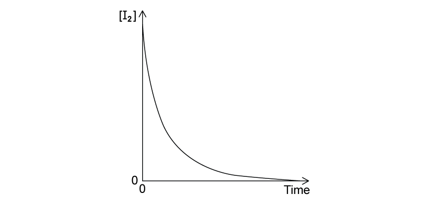
(d) Sketch how the initial rate changes with different initial concentrations of \(\ce{H+}\). [1 mark]
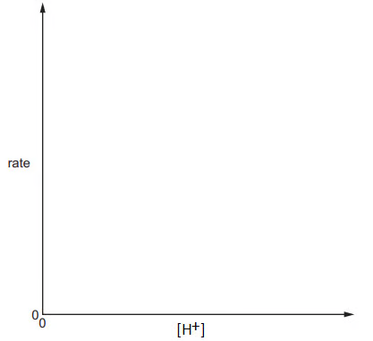
Show mark scheme / model answer
(a) Propanone is first-order, iodine is zero-order because it is absent from the rate equation, and \(\ce{H+}\) is first-order. Overall order \(=1+0+1=2\). The acid is a catalyst because it appears in the rate equation but is not a reactant in the overall equation.
[4](b)(1)
\[k=\frac{5.40\times10^{-5}}{(1.50\times10^{-1})(7.75\times10^{-1})}=4.65\times10^{-4}\ \mathrm{dm^3\,mol^{-1}\,s^{-1}}\]
[2](b)(2) Increasing temperature increases both the rate constant and the rate of reaction.
[1](c) Draw a tangent to the concentration-time curve at \(t=0\). Calculate the magnitude of its gradient; this is the initial rate.
[2](d) Draw a straight line through the origin because the reaction is first-order with respect to \(\ce{H+}\).
[1]
Example 7 · Hydrogen peroxide order and temperature · 5.6 SQ Medium Q4
Hydrogen peroxide decomposes as follows:
\[\ce{2H2O2(aq) -> 2H2O(l) + O2(g)}\]
(a) A student suggests that \(\text{rate}=k[\ce{H2O2}]^2\). Explain whether the student is correct. [2 marks]
(b) Initial-rate data are:
| \([\ce{H2O2}]\) / mol dm\(^{-3}\) | 0.100 | 0.210 | 0.285 | 0.420 | 0.540 | 0.700 |
|---|---|---|---|---|---|---|
| Rate / mol dm\(^{-3}\) s\(^{-1}\) | 0.0055 | 0.0116 | 0.0157 | 0.0230 | 0.0297 | 0.0385 |
Plot \([\ce{H2O2}]\) against rate and state the rate equation. [3 marks]
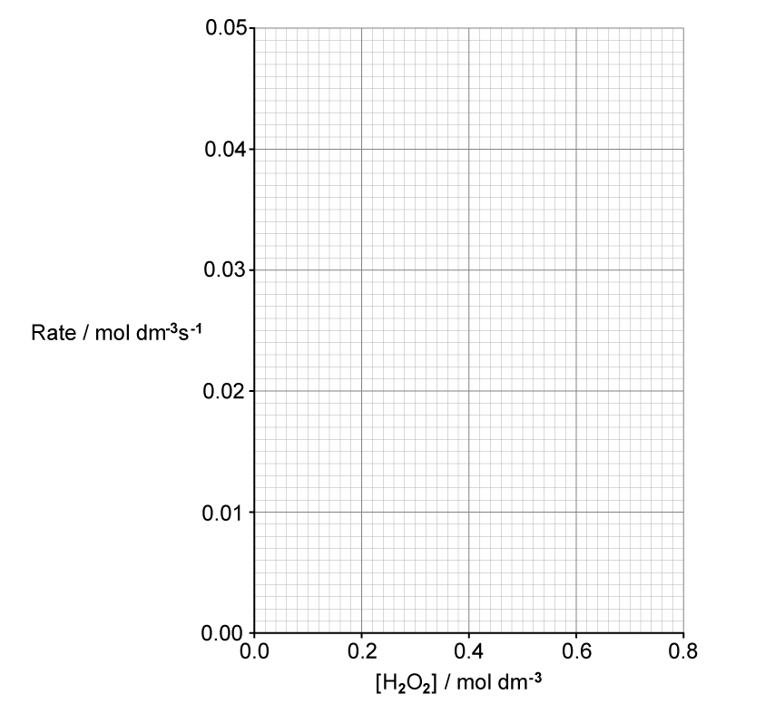
(c) A concentration-time graph is shown. Explain how to use it to prove the order with respect to \(\ce{H2O2}\). [2 marks]
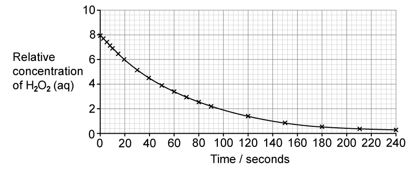
(d) Under certain conditions the reaction is first-order with \(k=2.0\times10^{-6}\ \mathrm{s^{-1}}\).
- Calculate the initial rate of a \(0.65\ \mathrm{mol\,dm^{-3}}\) solution.
- Explain the effect of decreasing temperature on \(k\) and the rate.
[3 marks]
Show mark scheme / model answer
(a) The student is not correct. The rate equation cannot be deduced from the chemical equation or stoichiometry; it must be determined experimentally.
[2](b) The plotted points lie on a straight line through the origin, so the reaction is first-order:
\[\text{rate}=k[\ce{H2O2}]\]
[3](c) Measure two or more successive half-lives. For example, relative concentration 8 to 4 takes about 47 s, and 4 to 2 takes about 47 s. Constant half-life proves first-order behaviour.
[2](d)(1)
\[\text{initial rate}=k[\ce{H2O2}]=(2.0\times10^{-6})(0.65)=1.3\times10^{-6}\ \mathrm{mol\,dm^{-3}\,s^{-1}}\]
[1](d)(2) Lower temperature decreases \(k\) and decreases the rate because a smaller fraction of molecules has energy equal to or greater than the activation energy.
[2]
Example 8 · Nitrogen oxides and rate-determining step · 5.6 SQ Medium Q5
(a) Nitrogen monoxide is involved in the formation of ozone:
\[\ce{NO + 1/2O2 -> NO2}\] \[\ce{NO2 -> NO + O}\] \[\ce{O2 + O -> O3}\]
- What is the overall equation?
- Explain why NO is acting as a catalyst.
[2 marks]
(b) The rate equation for NO reacting with oxygen is:
\[\text{rate}=k[\ce{NO}]^2[\ce{O2}]\]
An experiment gives rate \(6.5\times10^{-4}\ \mathrm{mol\,dm^{-3}\,s^{-1}}\), \([\ce{NO}]=5.0\times10^{-2}\ \mathrm{mol\,dm^{-3}}\) and \([\ce{O2}]=1.0\times10^{-2}\ \mathrm{mol\,dm^{-3}}\). Calculate \(k\) and its units. [2 marks]
(c) Nitrogen dioxide reacts with carbon monoxide:
\[\ce{2NO2(g) + CO(g) -> 2NO(g) + CO2(g)}\]
The rate equation is \(\text{rate}=k[\ce{NO2}]^2\).
| Experiment | \([\ce{NO2}]\) / mol dm\(^{-3}\) | \([\ce{CO}]\) / mol dm\(^{-3}\) | Initial rate / mol dm\(^{-3}\) s\(^{-1}\) |
|---|---|---|---|
| 1 | \(4.1\times10^{-2}\) | \(2.8\times10^{-3}\) | \(3.3\times10^{-5}\) |
| 2 | \(7.8\times10^{-2}\) | \(2.8\times10^{-3}\) | to be calculated |
| 3 | to be calculated | \(1.8\times10^{-4}\) | \(1.8\times10^{-4}\) |
Calculate \(k\) and complete the table. [4 marks]
(d) For the reaction \(\ce{2NO + 2H2 -> N2 + 2H2O}\), the rate equation is \(\text{rate}=k[\ce{NO}]^2[\ce{H2}]\). A proposed mechanism is:
- \(\ce{2NO + H2 -> N2O + H2O}\)
- \(\ce{N2O + H2 -> N2 + 2H2O}\)
Explain which step is rate-determining. [2 marks]
Show mark scheme / model answer
(a)(1)
\[\ce{1/2O2 -> O3}\]
or \(\ce{3O2 -> 2O3}\).
[1](a)(2) NO is used in the first step and regenerated in the second step, so it is not consumed overall.
[1](b)
\[k=\frac{6.5\times10^{-4}}{(5.0\times10^{-2})^2(1.0\times10^{-2})}=26\]
\[k=26\ \mathrm{mol^{-2}\,dm^6\,s^{-1}}\]
[2](c)
\[k=\frac{3.3\times10^{-5}}{(4.1\times10^{-2})^2}=1.96\times10^{-2}\ \mathrm{mol^{-1}\,dm^3\,s^{-1}}\]
Experiment 2:
\[\text{rate}=k(7.8\times10^{-2})^2=1.19\times10^{-4}\ \mathrm{mol\,dm^{-3}\,s^{-1}}\]
Experiment 3:
\[[\ce{NO2}]=\sqrt{\frac{1.8\times10^{-4}}{1.96\times10^{-2}}}=9.58\times10^{-2}\ \mathrm{mol\,dm^{-3}}\]
[4](d) Step 1 is rate-determining because it contains both NO and \(\ce{H2}\) with the correct powers shown in the rate equation.
[2]
5.6 Reaction Kinetics (A Level Only) - Hard
Example 9 · Chlorination of propanone · 5.6 SQ Hard Q1
In the presence of acid, chlorine and propanone react:
\[\ce{CH3COCH3(aq) + Cl2(aq) -> CH3COCH2Cl(aq) + HCl(aq)}\]
The concentration-time graph for chlorine is shown below.
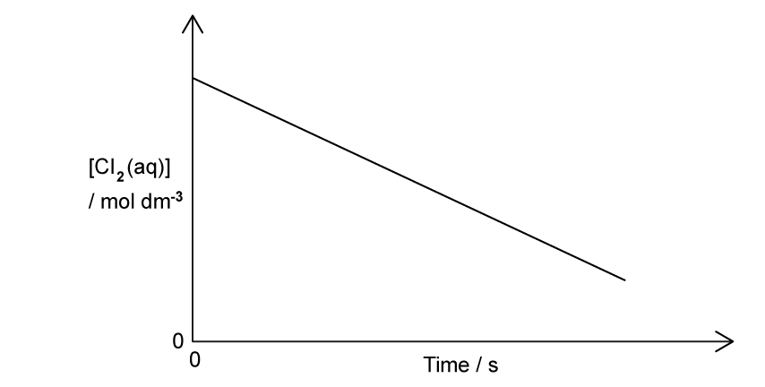
| Experiment | \([\ce{Cl2}]\) / mol dm\(^{-3}\) | \([\ce{CH3COCH3}]\) / mol dm\(^{-3}\) | \([\ce{H+}]\) / mol dm\(^{-3}\) | Initial rate / mol dm\(^{-3}\) s\(^{-1}\) |
|---|---|---|---|---|
| 1 | 0.003 | 0.75 | 0.05 | \(0.18\times10^{-5}\) |
| 2 | 0.003 | 1.50 | 0.15 | \(1.08\times10^{-5}\) |
| 3 | 0.003 | 1.50 | 0.30 | \(2.16\times10^{-5}\) |
(a) Use the results to determine the reaction orders and explain your answer. [4 marks]
(b) Deduce the rate equation and calculate \(k\), including units. [4 marks]
(c) A reaction mixture has rate \(0.26\times10^{-5}\ \mathrm{mol\,dm^{-3}\,s^{-1}}\) at pH 2. Calculate the rate if the pH is changed to 1, with all other conditions unchanged. [1 mark]
(d) State the effect of repeating the experiment at a lower temperature on rate and rate constant. [2 marks]
Show mark scheme / model answer
(a) Chlorine is zero-order because the concentration-time graph has a constant negative gradient. Hydrogen ions are first-order because doubling \([\ce{H+}]\) from experiment 2 to 3 doubles the rate. Propanone is first-order because between experiments 1 and 2, doubling propanone and tripling hydrogen ions gives a six-fold rate increase; the factor of 3 is due to \(\ce{H+}\), leaving a factor of 2 due to propanone.
[4](b)
\[\text{rate}=k[\ce{CH3COCH3}][\ce{H+}]\]
\[k=\frac{0.18\times10^{-5}}{(0.75)(0.05)}=4.80\times10^{-5}\ \mathrm{dm^3\,mol^{-1}\,s^{-1}}\]
[4](c) At pH 2, \([\ce{H+}]=10^{-2}\); at pH 1, \([\ce{H+}]=10^{-1}\), so \([\ce{H+}]\) increases ten-fold. The reaction is first-order in \(\ce{H+}\), so:
\[\text{rate}=0.26\times10^{-5}\times10=2.60\times10^{-5}\ \mathrm{mol\,dm^{-3}\,s^{-1}}\]
[1](d) Lower temperature decreases the rate and decreases \(k\), because fewer molecules have energy equal to or greater than the activation energy.
[2]
Example 10 · Nitrogen monoxide and ozone catalysis · 5.6 SQ Hard Q2
The rate equation for nitrogen monoxide reacting with oxygen is \(\text{rate}=k[\ce{NO}]^2[\ce{O2}]\).
(a) State what happens to the rate if the initial concentration of NO is tripled and the initial concentration of oxygen is halved. [1 mark]
(b) The formation of ozone involves:
\[\ce{NO + 1/2O2 -> NO2}\] \[\ce{NO2 -> NO + O}\] \[\ce{O2 + O -> O3}\]
- Write the overall equation.
- Explain why NO is a homogeneous catalyst.
[2 marks]
(c) In the upper atmosphere, ozone is removed:
\[\ce{O + O3 -> 2O2}\]
The rate equation is \(\text{rate}=k[\ce{NO}][\ce{O3}]\).
- State how the overall equation and rate equation show that the mechanism contains more than one step.
- Deduce a possible two-step mechanism.
[3 marks]
(d) Ozone reacts with ethene:
\[\ce{O3 + C2H4 -> 2CH2O + O2}\]
The order with respect to both reactants is first-order. The initial rate of methanal formation is \(2.0\times10^{-10}\ \mathrm{mol\,dm^{-3}\,s^{-1}}\). Ozone is doubled and ethene is tripled. Calculate the initial rate of oxygen formation. [2 marks]
Show mark scheme / model answer
(a) NO contributes a factor of \(3^2=9\) and oxygen contributes a factor of \(1/2\), so the rate increases by \(9\times1/2=4.5\).
[1](b)(1)
\[\ce{1/2O2 -> O3}\]
or \(\ce{3O2 -> 2O3}\).
[1](b)(2) NO is in the gas phase, the same phase as the reaction mixture, and is used in one step and regenerated in a later step.
[1](c)(1) The overall equation does not match the rate equation, showing that the reaction cannot occur in a single elementary step.
[1](c)(2) One possible mechanism is:
\[\ce{NO + O3 -> NO2 + O2}\]
\[\ce{O + NO2 -> NO + O2}\]
Adding the steps gives the overall equation and cancels the intermediates.
[2](d) Doubling ozone and tripling ethene gives a six-fold rate increase:
\[2.0\times10^{-10}\times2\times3=1.2\times10^{-9}\]
This is the rate of methanal formation. From the equation, 2 mol methanal form for every 1 mol oxygen, so:
\[\text{rate of oxygen formation}=\frac{1.2\times10^{-9}}{2}=6.0\times10^{-10}\ \mathrm{mol\,dm^{-3}\,s^{-1}}\]
[2]
Example 11 · Arrhenius plot and activation energy · 5.6 SQ Hard Q3
Bromate(V) ions and bromide ions react in acid. The time taken for a fixed amount of bromine to form was measured:
| \(T\) / K | \(1/T\times10^3\) / K\(^{-1}\) | \(t\) / s | \(1/t\) / s\(^{-1}\) | \(\ln(1/t)\) |
|---|---|---|---|---|
| 408 | 2.451 | 21.14 | 0.0473 | -3.051 |
| 428 | 2.336 | 10.57 | 0.0946 | -2.358 |
| 448 | 2.232 | 5.54 | 0.1805 | -1.712 |
| 468 | 2.137 | 3.02 | 0.3309 | -1.106 |
| 488 | 2.049 | 1.71 | 0.5851 | -0.536 |
(a) Calculate the missing values in the table. [3 marks]
(b) Plot \(\ln(1/t)\) against \(1/T\times10^3\) and draw a straight line of best fit.
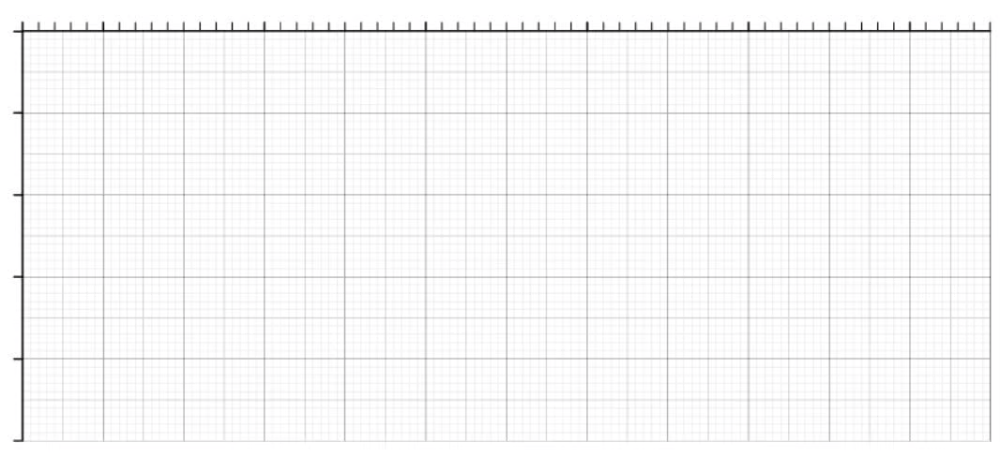
[4 marks]
(c) Use the graph and \(R=8.31\ \mathrm{J\,K^{-1}\,mol^{-1}}\) to calculate the activation energy in kJ mol\(^{-1}\). [4 marks]
Show mark scheme / model answer
(a)
\[1/428=2.336\times10^{-3}\ \mathrm{K^{-1}}\]
\[1/5.54=0.1805\ \mathrm{s^{-1}}\]
\[\ln(0.1805)=-1.712\]
\[1/3.02=0.3309\ \mathrm{s^{-1}}\]
[3](b) Label the x-axis \(1/T\times10^3\ /\mathrm{K^{-1}}\) and the y-axis \(\ln(1/t)\). Plot all five points using a suitable scale and draw a straight line of best fit.
[4](c) Use two points on the best-fit line. Since the horizontal axis is labelled \(1/T\times10^3\), the plotted horizontal change is \(0.2\times10^{-3}\ \mathrm{K^{-1}}\):
\[m=\frac{\Delta y}{\Delta x}=\frac{-2.2-(-0.9)}{0.2\times10^{-3}}=-6.50\times10^3\]
From the Arrhenius relationship, \(m=-E_a/R\):
\[E_a=-mR=-(-6.50\times10^3)(8.31)=5.40\times10^4\ \mathrm{J\,mol^{-1}}\]
\[E_a=54.0\ \mathrm{kJ\,mol^{-1}}\]
[4]